Key Metrics
The Problem
Large Revit models accumulate orphaned elements, inconsistent parameters (e.g. Fire Rating), disorganized views, and performance drag — and manual auditing doesn't scale across a project team.
The same discipline as data validation applies here: audit → score → report. Without a repeatable check, model-quality issues compound silently until they surface as coordination errors and slowdowns late in delivery.
Architecture
Audit pipeline: collectors → analyzers → scoring → dashboard + report export

Approach & Implementation
- Revit API helpers: FilteredElementCollector-based helpers with transaction-safe writes for all model interactions.
- Analyzers: Orphaned-element, parameter-consistency, view-statistics, and performance analyzers covering element counts, geometry-heavy categories, linked models, and worksets.
- Health scoring: 0–100 model health score derived from critical issues and warnings.
- Report export: JSON plus styled HTML report export for sharing findings with the team.
- WPF dashboard: Tabbed dashboard with overview, orphaned, parameters, views, performance, and worksharing tabs.
- JSON config: Configurable naming standards, required parameters, and thresholds without code changes.
Challenges & Solutions
Challenge: Revit API Threading & Transaction Constraints
Model reads and writes must respect Revit's single-threaded API context and transaction rules, limiting how audits can be structured.
Solution: Transaction-Safe Helper Layer
Centralized Revit helpers wrap all document access with proper transaction handling, keeping analyzers read-safe and writes controlled.
Challenge: IronPython / .NET Interop Quirks
Bridging IronPython with Revit's .NET API surfaces type-conversion and binding edge cases not present in C# add-ins.
Solution: Defensive Wrappers
Safe-access helpers with fallbacks (e.g. element naming) and comprehensive error handling isolate interop issues from audit logic.
Challenge: Audit Speed on Large Models
Full-model collectors over tens of thousands of elements can stall the Revit session if run naively.
Solution: Optimized Collectors + Timing
Category-filtered collectors, targeted queries, and per-operation performance timing keep audits fast and identify slow spots.
Outcome
A repeatable audit producing a scored report the client team can act on — each run surfaces orphaned elements, parameter gaps, view issues, and performance risks with a single health score and concrete recommendations.
Companion Implementations
- C# add-in sample: Sample C# add-in port of the analyzer in the sibling Workspace BIM_Pyrevit/BIMModelHealthAnalyzer.CSharp folder.
- Dynamo sample: Sample Dynamo graph of the audit workflow in the sibling Workspace BIM_Pyrevit/DynamoSamples folder.